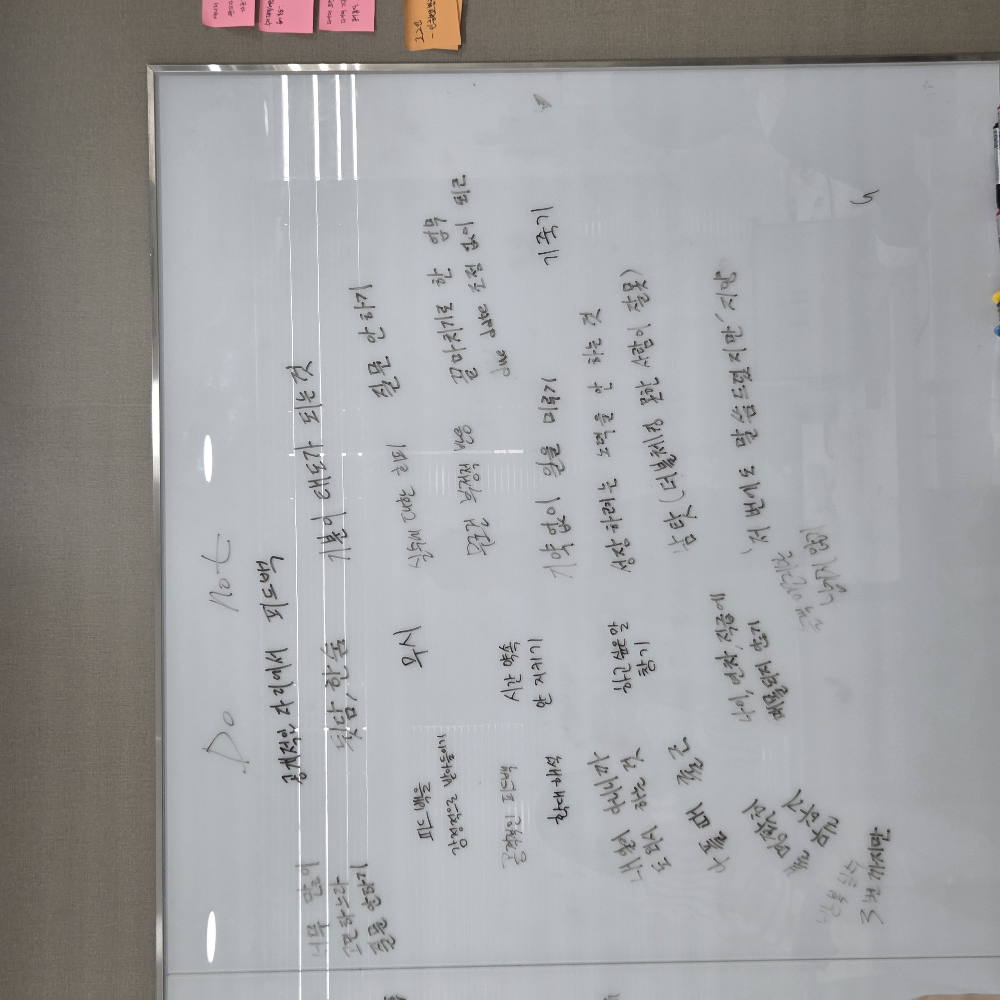

Culture Fit 이도형 · Growth Lead
팀원이 오직 '일'에만 집중할 수
있는 팀을 만듭니다
제가 팀장으로서 가장 신경 쓴 것은,
동료가 다른 곳에 에너지를 뺏기지 않고
오직 '일'에만 몰입할 수 있는 환경을 만드는 일이었습니다.

「좋은 팀장 되는 법」 4주 세션
'어떻게 하면 팀을 더 잘 이끌까'를 풀려고 참가. 타 팀장들과 논의하며 피드백의 기준과 팀원에게 다가가는 스탠스를 배웠습니다.
트레바리 세션
'새로운 시도를 팀에 적용'하려고 참가. 타사는 어떻게 일하는지를 흡수해 우리 팀의 방식으로 가져왔습니다.
💡
세션에서 배운 핵심 — 좋은 팀은 팀 차원의 'Do·Do Not' 문화로 팀원이 오직 '일'에만 집중하게 만든다는 것.
● 이도형 · Culture FitLearn

DO · 우리가 지킬 것
팀원이 '일'에 몰입할 수 있도록 우리가 함께 하기로 한 행동들.

DO NOT · 하지 않을 것
집중을 깨는 행동을 함께 정의 — 팀장인 나부터 무엇을 하면 안 되는지 배우고 적용했습니다.
🧩
팀원과 함께 정리했기에 규칙이 살아 움직입니다 — 기준이 명확하면, 사소한 데 에너지를 쓰지 않습니다.
● 이도형 · Culture FitSystem
- 1on1에서 팀원이 준 피드백,
- 타 팀장과 업무가 부딪칠 때 따로 커피챗으로 받은 피드백을
- 부엌 위 칠판에 적어 하루의 시작마다 머리에 새겼습니다.
"내가 기준이 되면 안 됨 — 방향만 주고, 스스로 결정할 기회를 준다"
"다른 사람 앞에서 더 많이 칭찬하고, 기죽이지 않게 입을 조심한다"
"나를 가장 소중히 — 필요 이상으로 애쓰지 않되, 만족스러우면 베푼다"

● 이도형 · Culture FitSelf